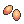
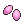
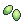
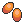
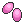
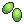
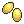

Estas son herramientas para calcular cuando estarán listas tus bayas, junto con una lista que te será de ayuda para conocer las caracteristicas principales de las bayas
| Mostrando todas las bayas |
| Nombre |
Se crea con: |
Usos |
TC |
BC |
Zreza |
3 semillas picantes  |
Cura la paralisis
Farmeo de semillas picantes |
16 hrs |
2 - 6 |

Atania |
3 semillas secas |
Despierta al Pokémon
Farmeo de semillas secas |

Meloc |
3 semillas dulces  |
Cura el envenenamiento
Farmeo de semillas dulces |

Safre |
3 semillas amargas  |
Cura las quemaduras
Farmeo de semillas amargas |
Perasi |
3 semillas ácidas  |
Cura el congelamiento
Farmeo de semillas ácidas |
Grana |
1 semilla picante
+ 1 semilla amarga
+ 1 semilla muy picante 
|
Resta 10 Ev´s de PS
Aumenta la felicidad |
44 hrs |
7 - 9 |

Algama |
1 semilla seca
+ 1 semilla ácida
+ 1 semilla muy seca
|
Resta 10 Ev´s de Atk
Aumenta la felicidad |

Ispero |
1 semilla picante
+ 1 semilla dulce
+ 1 semilla muy dulce 
|
Resta 10 Ev´s de Def
Aumenta la felicidad |
Meluce |
1 semilla seca
+ 1 semilla amarga
+ 1 semilla muy amarga 
|
Resta 10 Ev´s de Sp. Atk
Aumenta la felicidad |
Uvav |
1 semilla dulce
+ 1 semilla ácida
+ 1 semilla muy ácida 
|
Resta 10 Ev´s de Sp. Def
Aumenta la felicidad |
Tamate |
1 semilla picante
+ 1 semilla seca
+ 1 semilla muy picante
|
Resta 10 Ev´s de Velocidad
Aumenta la felicidad |
Zanama |
1 semilla muy picante
+ 1 semilla dulce
+ 1 semilla amarga
|
Restaura 10 PP de un movimiento |
20 hrs |
5 - 7 |